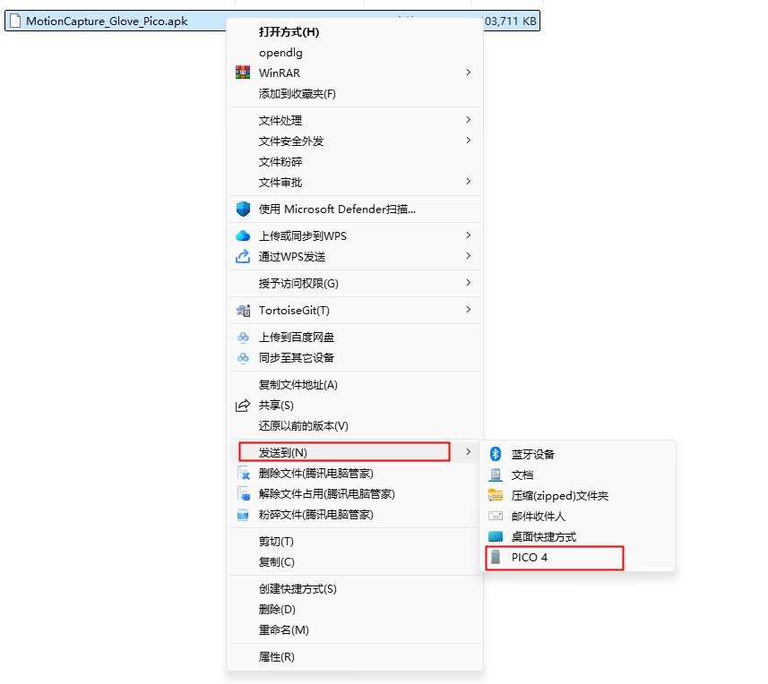
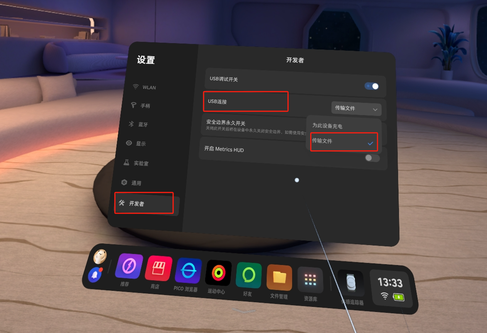
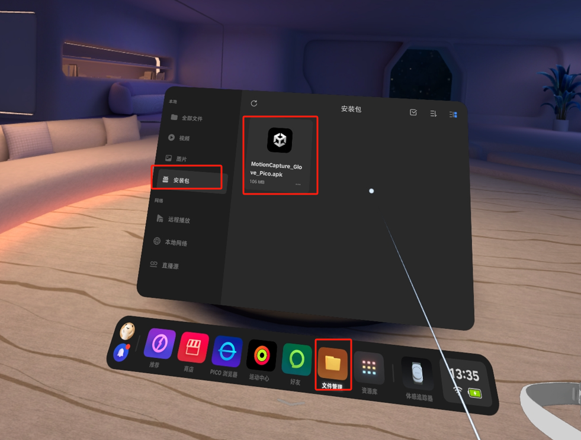
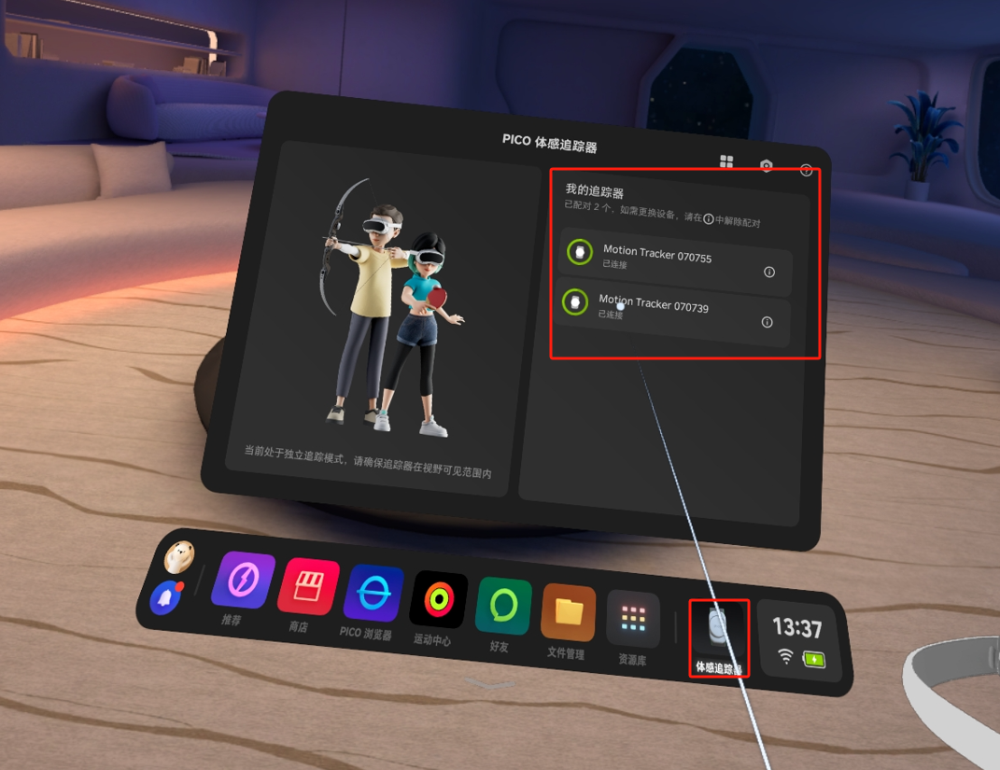
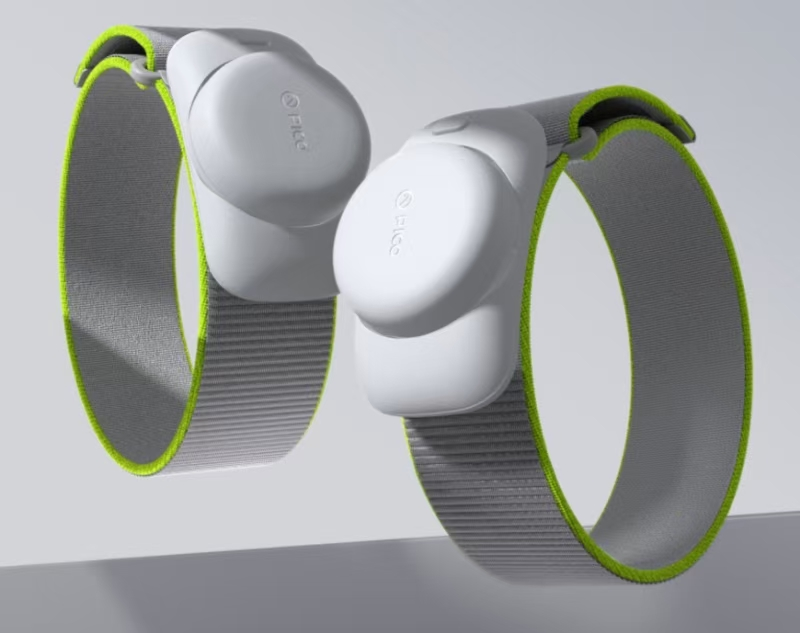
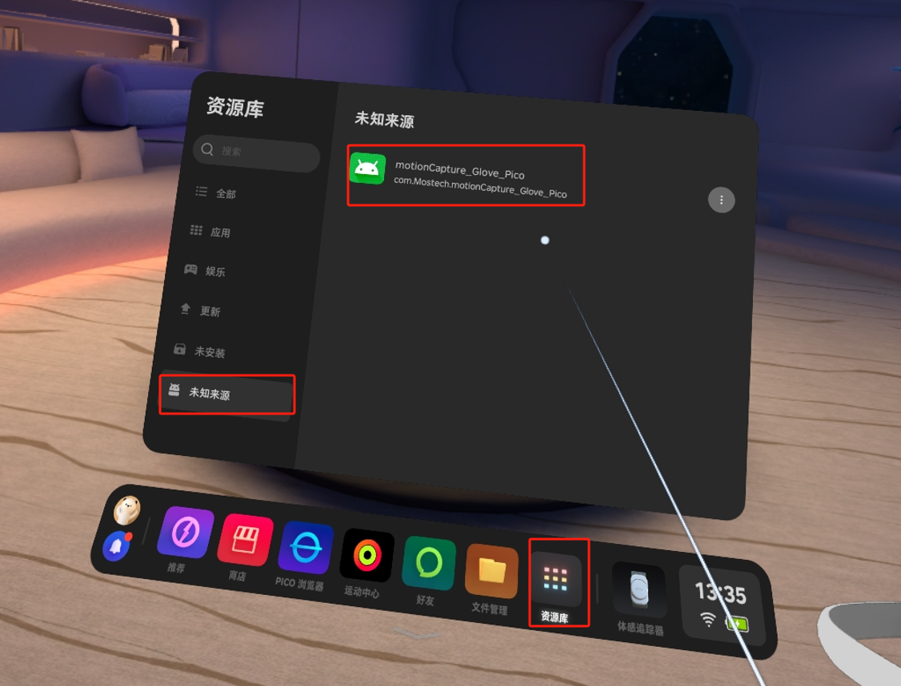
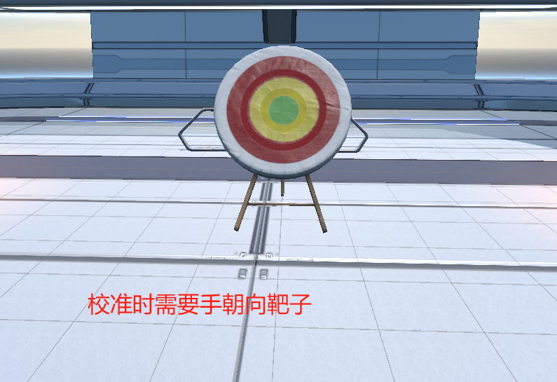
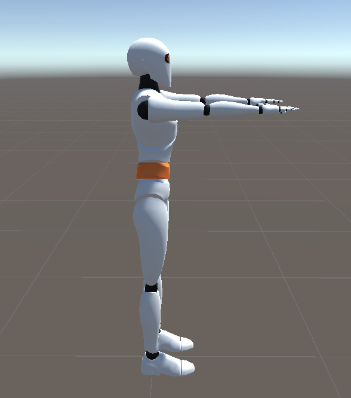
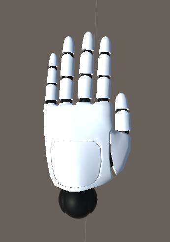
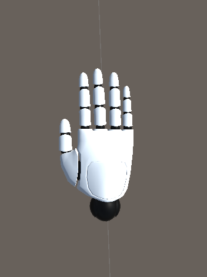

Using the G1 Data Glove with a PICO Standalone Headset
1. Development Package
Download link: GloveInteraction.unitypackage
Demo scene:
2. Function Test Installation Package
Download the file to your computer.
MotionCapture_Glove_Pico_InSituModel_1.0.0.apk V1.0.0 2025-02-27
3. Function Test Steps
3.1 Send the Installation Package to the PICO
Use a USB cable to connect the PICO to your computer, select the MotionCapture_Glove_Pico.apk file, right-click and choose "Send to PICO4".

If the PICO device is not found, enable "Developer Mode" on the PICO and turn on file transfer.

3.2 Install the Application
On the PICO, go to File Manager → Installation Packages, and tap MotionCapture_Glove_Pico.apk to install it.

4. Using the Glove Software
4.1 Connect the Trackers
Before using the software, make sure two trackers are connected. Open the body-tracking software and connect the two trackers.


4.2 Open the Software
Go to Library → Unknown Sources and open the MotionCapture_Glove_Pico software.
Possible issues:
- Prompt that the PICO version is too low → Please upgrade the PICO system first.
- Prompt that a network connection is required → Please connect to Wi-Fi first.

4.3 Software Workflow
Prerequisites: The glove receiver is plugged into the PICO, and both glove devices are powered on.
-
Capture Data Tap the "Capture Data" button and check whether the packet rate is 0. If it is 0, check whether the glove is powered on. If the packet rate is very low, switch the channel in the PC software
MotionStudio. -
Pose Calibration (hands must face the target) If there are no issues above, tap the "Pose Calibration" button. The pose is shown in the figure below:

Arm pose:
Hand pose:
